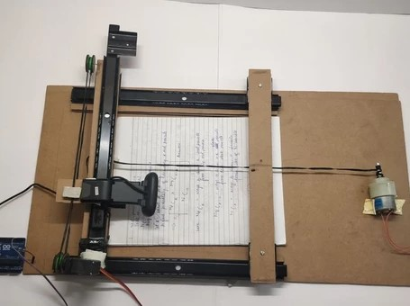

DAD CARES
Depression Analysis Device COMPUTER AIDED RESEARCH FOR EARLY DETECTION AND SUPPORT
Motivation
Depression and stress are the most common, yet looked over, health issues, faced by adolescents today. It is often left unidentified owing to the stigma the society attaches to it. According to the book, GRAPHOLOGY AND HEALTH-A Collection of Historical Articles on The Signs of Physical and Mental Health in Handwriting, it is possible to recognize, from handwriting the presence of various “local and constitutional troubles”. Hence, we decided to tackle this problem using handwriting analysis, aka Graphology.

How It Works
The device works by scanning the document across the XY plane and then reconstructing images that are captured through an Arduino camera. After the image has been scanned, if any part seems scanned imperfectly, it can be clicked on to have that portion rescanned. After this, we are using pythons OpenCV library to analyse the image. After dividing the image based on word count, the spacing can be checked using the scanner as the scanner will move through specified parts and measure the space.
3D Design
DAD CARES In Action